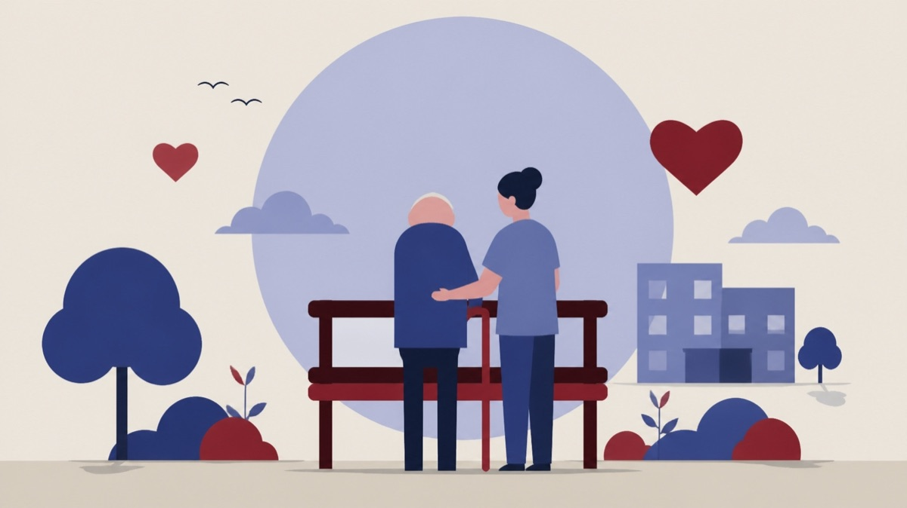

Besluttet 13. august, Børn, Skole og Familie, Frederikssund
Orientering om danmarkskortet 2025

Kort fortalt
- Forslaget
- Tage orienteringen til efterretning.
- Hvem
- Børn, Skole og Familie, Frederikssund KommuneGår videre til Økonomiudvalget og Byrådet
- Hvornår
- Torsdag 13. august 2026
- Status
- Besluttet. Taget til efterretning. Anne-Lise Kuhre (A) og Tobias Daniel Isaksson (I).
Er noget forkert her? Skriv til os
Sagens vej
- 13. augustBørn, Skole og FamilieBesluttet
- SenereØkonomiudvalgetAfventer
Læs hele sagen Kommunens egen tekst
Indstilling
Administrationen indstiller, at Børn, Skole og Familie over for Økonomiudvalget og Byrådet anbefaler, at:
• Tage orienteringen til efterretning.
Sagsfremstilling
Social- og Ældreministeriet offentliggør årligt tre kommunefordelte danmarkskort over omgørelsesprocenter i Ankestyrelsens klagesager på socialområdet. Socialområdet omfatter alle bestemmelser i serviceloven og barnets lov, hvor der er klageadgang til Ankestyrelsen over kommunalbestyrelsens afgørelser, og dækker det specialiserede børne- og ungeområde, det specialiserede voksenområde samt ældreområdet.
Danmarkskortene kan tilgås som interaktive kort på Social- og Ældreministeriets hjemmeside:
Danmarkskort med kommunale sammenligninger - Socialministeriet
Omgørelsesprocenten angiver andelen af sager, der omgøres af Ankestyrelsen, det vil sige sager der hjemvises, ændres eller ophæves. En hjemvisning indebærer, at sagen sendes tilbage til kommunen til fornyet behandling, typisk fordi sagen ikke er tilstrækkeligt oplyst. En hjemvisning betyder ikke nødvendigvis, at afgørelsens resultat ændres. Det er væsentligt at være opmærksom på, at omgørelsesprocenten kan være påvirket af et lavt antal realitetsbehandlede sager i Ankestyrelsen. Selv få omgørelser kan således give en relativt høj omgørelsesprocent (se bilag 1 for yderligere uddybning af omgørelsesprocenten).
Omgørelsesprocenten på børnehandicapområdet i Frederikssund Kommune
Ankestyrelsen har i 2025 behandlet 16 afgørelser fra børnehandicapområdet i Frederikssund Kommune, hvilket er tre flere end i 2024. De 16 behandlede afgørelser fordeler sig således:
• 5 afgørelser (31,3 %) er stadfæstet, hvilket betyder, at Ankestyrelsen har truffet samme afgørelse som kommunen.
• 5 afgørelser (31,3 %) er hjemvist til fornyet behandling i kommunen på baggrund af utilstrækkelig sagsoplysning. I to ud af de fem hjemviste afgørelser har kommunen efterfølgende fastholdt den oprindelige afgørelse. I én afgørelse har kommunen omgjort dele af afgørelsen og fastholdt andet. I de øvrige to afgørelser har kommunen ændret afgørelserne efter hjemvisningen.
• 6 afgørelser (37,5 %) er ændret eller ophævet, hvilket indebærer, at Ankestyrelsen har truffet en anden afgørelse end kommunen.
I alt er 11 ud af 16 afgørelser blevet omgjort. Dette svarer til en omgørelsesprocent på 68,8 %. Omgørelsesprocenten er steget med 14,8 procentpoint siden 2024 og ligger knap 10 procentpoint over landsgennemsnittet på 58,5 %. De 16 påklagede afgørelser skal set i forhold til, at der i 2025 i alt blev truffet 256 afgørelser på børnehandicapområdet i Frederikssund kommune.
Indsatser for at styrke den faglige og juridiske kvalitet
Frederikssund Kommune har fortsat et vedvarende fokus på at styrke kvaliteten i sagsbehandlingen på det sociale område, herunder den juridiske kvalitet i afgørelserne. Børnehandicapområdet er kendetegnet ved høj kompleksitet, hvilket både afspejler sig i sagsbehandlingen og generelt i højere omgørelsesprocenter sammenlignet med det øvrige socialområde.
Myndighedsafdelingen i Center for Familie og Rådgivning har de seneste år arbejdet systematisk med en række tiltag, der skal styrke kvaliteten i sagsarbejdet. Indsatserne omfatter bl.a.:
• løbende kompetenceudvikling med fokus på gældende lovgivning og praksis
• styrket faglig sparring og etablering af fora til drøftelse af komplekse sager
• øget fokus på systematisk og tilstrækkelig sagsoplysning
Dette arbejde videreføres med henblik på fortsat at udvikle kvaliteten i sagsbehandlingen. Det er ledelsens og medarbejdernes vurdering, at det systematiske fokus på faglig udvikling bidrager positivt til kvaliteten i afgørelser.
Inddragelse
Medarbejdere og ledelse er orienterede om tallene fra det opdaterede danmarkskort og bruger det aktivt i deres løbende kvalitetsarbejde.
Sagen er sendt til kommentering i Rådet for handicap, psykiatri og udsathed.
Kommentering:
I Rådet for Handicap, Psykiatri og Udsathed har vi tidligere kommenteret på handicapbarometeret.
Her påpegede vi i Rådet for Handicap, Psykiatri og Udsathed, at Ankestyrelsen i forbindelse med børnebarometeret 2025, fandt store fejlprocenter, på henholdsvis 54%, 41% og 48% i sagsbehandlinger der ikke blev påklaget, når borgere har fået et afslag.
Forskellen på Børnesagsbarometret og Danmarkskortet er:
At Børnebarometeret er en årlig, stikprøvebaseret undersøgelse af kvaliteten i kommunernes sagsbehandling på børneområdet (fx udsatte børn og unge).
Og Danmarkskortet (omgørelsesprocenter)er et overblik over Ankestyrelsens afgørelser i klagesager, der viser kommunernes såkaldte omgørelsesprocenter på social- og børneområdet.
Derfor henstiller vi til, at man i udvalget for Børn, Skole og Familie, forholder sig til, at der faktisk også er et kæmpe mørketal via de ikke påklaget sager.
Her er tale om børn og forældre, der faktisk ikke får den hjælp og eller den indsats, de har ret til og krav på.
Vi mener, at et relevant spørgsmål fra udvalget til de berørte afdelinger kunne være:
Når Ankestyrelsen har foretaget en stikprøvekontrol via børnebarometeret, hvordan retter de pågældende afdelinger så op på de forkerte afgørelse Ankestyrelsen finder?
Hvis dette ikke er tilfældet, så mener vi i Rådet for Handicap, Psykiatri og Udsathed, at dette skal begrundes med et sagligt og fagligt svar, da det handler om manglende retssikkerhed for de berørte børn og forældre. Og først derefter, kan man som udvalgsmedlem forholde sig til Danmarkskortet.
Danmarkskortet: Rådet har noteret sig, at der er sket en stigning på 3 sager ift. 2024, således at i alt 16 afgørelser er anket.
I alt er 11 ud af 16 afgørelser blevet omgjort. Dette svarer til en omgørelsesprocent på 68,8 %, som efter Rådets vurdering er meget alvorlig.
Omgørelsesprocenten er således steget med 14,8 procentpoint siden 2024 og ligger knap 10 procentpoint over landsgennemsnittet på 58,5 %.
Som forklaring på den høje omgørelsesprocent nævnes, at Børnehandicapområdet er kendetegnet ved høj kompleksitet, hvilket både afspejler sig i sagsbehandlingen og generelt i højere omgørelsesprocenter sammenlignet med det øvrige socialområde.
Rådet bakker op om Indsatser for at styrke den faglige og juridiske kvalitet med bl.a. kompetenceudvikling, faglig sparring mv. Dette øgede fokus på faglig udvikling skulle gerne afspejles positivt i næste års Danmarkskort.
Økonomi
Center for Økonomi har ingen bemærkninger, da sagen ikke har bevillingsmæssige konsekvenser.
Beslutning
Taget til efterretning.
Fraværende:
Anne-Lise Kuhre (A) og Tobias Daniel Isaksson (I).
Bilag
Kilde: Frederikssund Kommune, Børn, Skole og Familie, referat fra mødet torsdag 13. august 2026, punkt 67. Læs den originale sag hos kommunen.